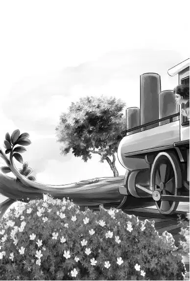
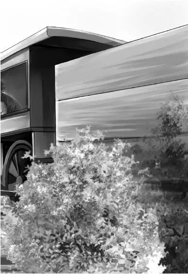

The knocking on the caboose door grew louder and louder.
“Who can that be？” Henry asked as he went to open the door. “Oh， it’s Al！Come right in！”
Al said， “I came to invite you to dinner at noon in our work-caboose.”
“What fun！” said Benny. “Are you going to do the cooking？”
“Yes，” said Al. “I’m the cook. But this is a surprise. We’ll unlock the door， and you can walk into our caboose at noon.”
“Could I ever see the engine？” asked Benny.
“I’ll ask Mr. Davis，” said Al. “He’s the engineer. I think he may let you run the engine. He’ll show you the dead-man’s pedal， anyway.”
“What’s the dead-man’s pedal？” asked Benny.
“A secret，” said Al. “See you at noon.”
At noon the family walked into the work-caboose. Mr. Carr was there， waiting. He said， “Mr. Davis is stopping the train. He says Benny can walk down to the engine.”
Benny said， “I suppose I couldn’t walk down on top of the train？”
“No，” said Mr. Carr laughing， “you could not.”
When the train stopped， Al and Mr. Carr and Benny walked down to the engine. When they were safely aboard， the train started again.
“Now you sit down in the engineer’s seat， Benny，” said Mr. Davis. “Here is the dead-man’s pedal. I keep my foot on that pedal all the time. If anything happened to me， my foot would slip off， and the train would stop. The air brakes would stop the train.”
“What could happen to you？” Benny asked.
“Well， I might have a heart attack.”
“Oh， I hope you won’t，” said Benny.
Mr. Davis laughed. “No， I don’t expect to， but that pedal is a nice thing to have. Now， Benny， pull this lever and the train will start.”
Benny pulled the lever. The big engine began to move. Benny said， “Oh， this is fun！I’m really running the train.”
“You can go faster，” said Mr. Davis. “Just pull the lever a little more.”
Soon Benny could make the train go faster or slower.
“Good， Benny，” said the engineer. “Now ring the bell. Now blow the whistle—right here. You see we are on a double track. A faster train will pass us later. Sometimes we set off dynamite on the track. See this little torpedo？That tells another train that danger is ahead. But now you had better stop the train.”
Al said， “Dinner is ready anyway.”
Benny stopped the train， and he walked back with Al and Mr. Carr to the trainmen’s caboose. He took one look at the table. “Oh， that’s keen！” he shouted. “Everyone has a talking horse！”
On each plate was an animal made of a big frankfurter. The legs were four smaller sausages. The heads were pickles. The tails were carrot curls.
Al said， “We have plenty of extra frankfurters， so eat all you want.”
They all sat down at the table. Mr. Davis started up the engine again.
“This is the first party we ever had on this caboose，” Mr. Carr said.
“I never thought I’d ever be eating dinner in a caboose with a train crew. Can I run the Diesel again after dinner？” asked Benny.
“Sure，” said Mr. Carr. “Mr. Davis says he likes to have help. It gives him a rest.”
Grandfather laughed.
After dinner， Mr. Davis stopped the train again， and Benny walked back to the engine. Mr. Davis gave him the engineer’s seat， and he pulled the lever. Benny was quite used to it now. He kept his eyes on the two tracks ahead， but there was not much to see.
Mr. Davis said， “Very soon that fast train will pass right by us on that other track. Just slow down while it goes by.”
“My， this is a lonesome place，” said Benny. “No houses.”
“No，” said Mr. Davis， “there isn’t a house for miles.”
“A few trees，” said Benny， “two railroad tracks， and us. And that’s all.”
Suddenly Benny saw something on the track ahead.
“Oh， look， Mr. Davis！” he shouted. “What’s that？”
Mr. Davis had seen the same thing. He grabbed the lever. “Let me do it， boy！”
He stopped the train as quickly as he could. It was not a minute too soon.
“Well， that was good luck，” he said. A narrow escape！”
Al was on top of the train. He took one look at the tracks ahead. Then he climbed quickly down the ladder and ran back toward the end of the train.
“Why is Al running？” Benny asked. “I can’t see anything back there.”
“The fast train on the other track is due any minute，” Mr. Davis said. “They won’t see the trouble in time to stop. We have to warn them.”
“How？” asked Benny. “What can we do in time to stop them？”


“Al is going to put a torpedo on that other track behind us. When that fast freight runs over the torpedo， the engineer will stop his train.”
“What is that thing on the tracks ahead of us？” Benny asked.
“A tree. Let’s get out and see it. You see it has fallen right across both tracks.”
By now the rest of the Aldens knew that something was wrong. They had seen Al running past them， and they knew that the train had stopped very suddenly. Violet asked， “Oh， do you suppose anything has happened to Benny？”
“Let’s go and see，” said Grandfather. When the family reached the front of the engine， they could see Benny standing beside the men. Mr. Davis and Mr. Carr each had a shovel and an axe.
It was a sight to see. An enormous tree had fallen across both tracks. Wet earth was piled high on one side. It had come from a high bank above the track.
“The storm did this，” said Mr. Davis.
The two men began to chop off branches. The Aldens pulled the branches away without a word. They threw them down the bank out of the way. Everyone worked fast. Al shoveled the earth off the track.
Mr. Davis and Mr. Carr were listening for something. The engineer took out his watch and looked at it. “That train ought to be along any minute，” he said.
Suddenly there was a great BANG！Everyone jumped. Violet covered her ears. “What an awful noise！” she said.
“That’s the torpedo！” said Benny. He looked down the track and saw the other train. It had stopped. Men were running toward them.
One man shouted， “The storm did this， I suppose？”
“Right！” said Mr. Carr. “The wind blew the tree down， and the rain washed down all this earth. It’s a wonder it didn’t wash out the track under us.”
The new train crew had shovels and axes， too. They went right to work. Soon both tracks were clear， and the fast train could go along. The Aldens waved and watched it out of sight.
Benny said， “I guess you’d better run the engine， Mr. Davis. It’s too exciting for me.”
The Aldens thanked the men for the fine dinner. Then they started back to their own caboose. As they walked along， Jessie said， “I’ve had enough excitement for one day. Let’s do something quiet.”
“You might mend my mattress， Jessie. That will be quiet enough，” said Benny.
“Good！” agreed Jessie. “Just the thing. I will mend your mattress right now.”
The minute the train started， Jessie got a big needle and heavy thread from Violet’s workbag. She sat down at the big table.
“This is just what I meant，” she said. “A quiet change for everybody.”